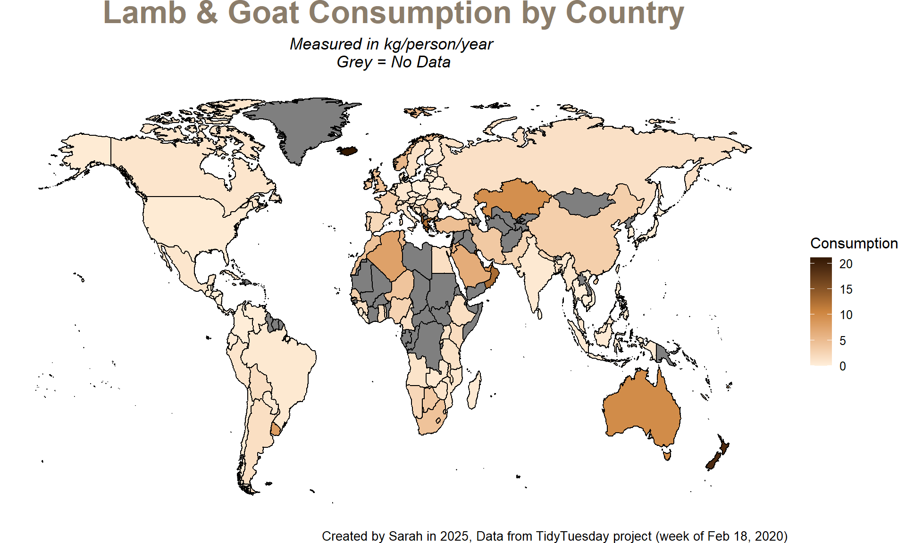
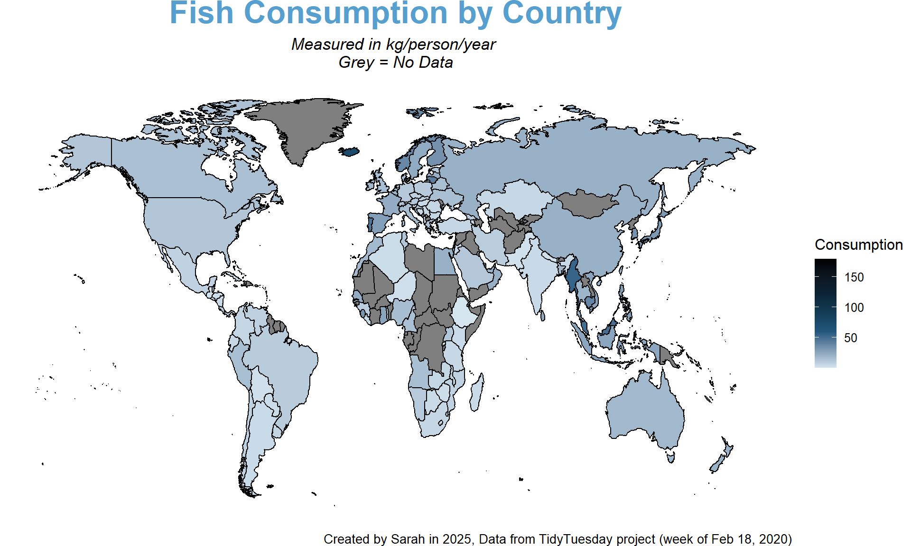
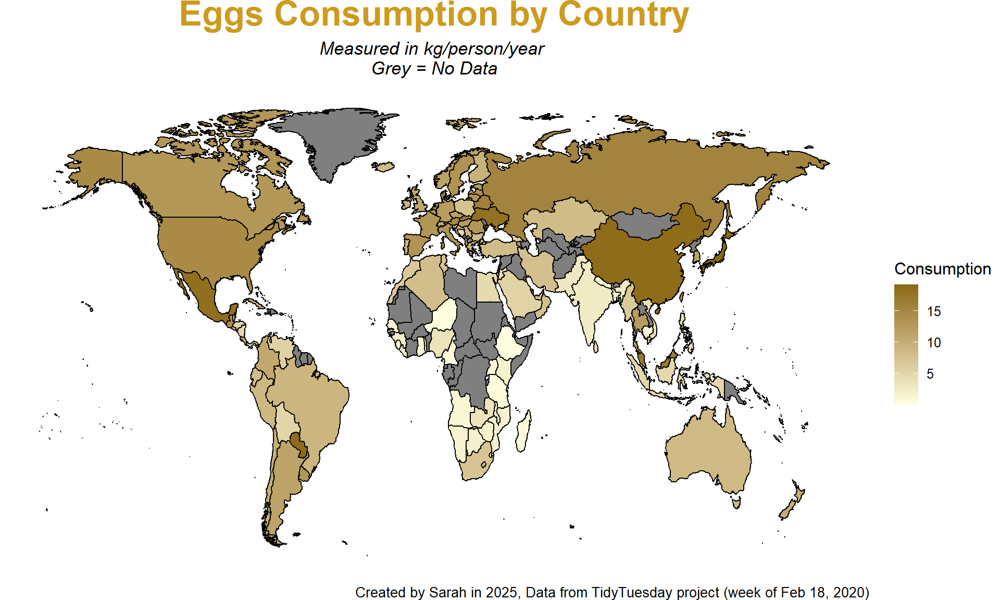
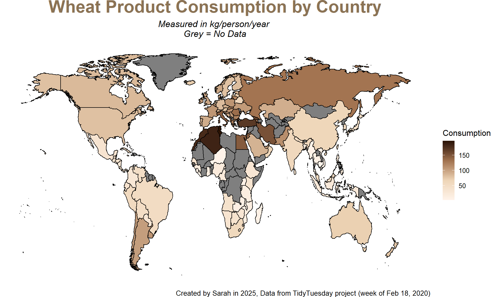
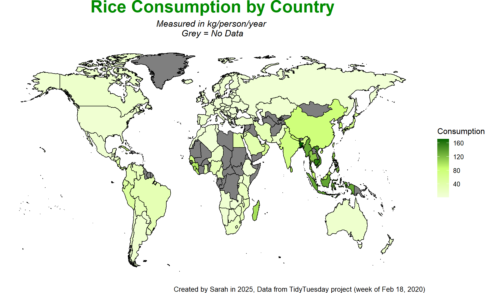
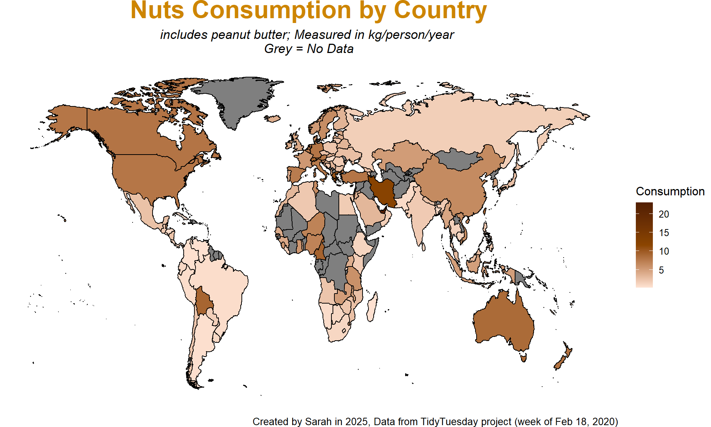

Research question: What does the consumption of each food category in each country look like?
Dataset: Food Consumption and CO2 Emissions dataset from Week 8 in 2020 (Feb 2, 2020) in the TidyTuesday project
# load packages and datalibrary(tidyverse)
── Attaching core tidyverse packages ──────────────────────── tidyverse 2.0.0 ──
✔ dplyr 1.1.4 ✔ readr 2.1.5
✔ forcats 1.0.0 ✔ stringr 1.5.1
✔ ggplot2 3.5.1 ✔ tibble 3.2.1
✔ lubridate 1.9.4 ✔ tidyr 1.3.1
✔ purrr 1.0.2
── Conflicts ────────────────────────────────────────── tidyverse_conflicts() ──
✖ dplyr::filter() masks stats::filter()
✖ dplyr::lag() masks stats::lag()
ℹ Use the conflicted package (<http://conflicted.r-lib.org/>) to force all conflicts to become errors
library(tidytuesdayR)
Warning: package 'tidytuesdayR' was built under R version 4.4.3
library(maps)
Attaching package: 'maps'
The following object is masked from 'package:purrr':
map
library(mosaic)
Registered S3 method overwritten by 'mosaic':
method from
fortify.SpatialPolygonsDataFrame ggplot2
The 'mosaic' package masks several functions from core packages in order to add
additional features. The original behavior of these functions should not be affected by this.
Attaching package: 'mosaic'
The following object is masked from 'package:Matrix':
mean
The following objects are masked from 'package:dplyr':
count, do, tally
The following object is masked from 'package:purrr':
cross
The following object is masked from 'package:ggplot2':
stat
The following objects are masked from 'package:stats':
binom.test, cor, cor.test, cov, fivenum, IQR, median, prop.test,
quantile, sd, t.test, var
The following objects are masked from 'package:base':
max, mean, min, prod, range, sample, sum
world <-map_data("world")tuesdata <-tt_load('2020-02-18')
---- Compiling #TidyTuesday Information for 2020-02-18 ----
--- There is 1 file available ---
── Downloading files ───────────────────────────────────────────────────────────
1 of 1: "food_consumption.csv"
# porkggplot(world2, aes(x=long, y = lat, group = group))+geom_polygon(aes(fill=Pork), color ="black", linewidth =0.5)+expand_limits(x = world2$long, y = world2$lat)+theme_map()+labs(title ="Pork Consumption by Country",subtitle ="Measured in kg/person/year \nGrey = No Data",caption ="Data from TidyTuesday project (week of Feb 2, 2020)")+theme(plot.title =element_text(color="salmon3", face ="bold", size =25, hjust =0.5),plot.subtitle =element_text(hjust =0.5, size =13, face ="italic"),plot.caption =element_text(size =10) )+scale_fill_gradientn(name ="Consumption", colors =c("peachpuff","salmon2", "#471b0b"), values = scales::rescale(seq(0,5, by =0.1)))
Observations
Pork consumption is highest in Europe (eg Spain, Germany) and China, but much lower in Africa/Middle East and South + Southeast Asia. I would guess this is due to large Muslim populations in these parts of the world, so pork consumption is much lower.
# poultryggplot(world2, aes(x=long, y = lat, group = group))+geom_polygon(aes(fill=Poultry), color ="black", linewidth =0.5)+expand_limits(x = world2$long, y = world2$lat)+theme_map()+labs(title ="Poultry Consumption by Country",subtitle ="Measured in kg/person/year \nGrey = No Data",caption ="Data from TidyTuesday project (week of Feb 2, 2020)")+theme(plot.title =element_text(color="pink3", face ="bold", size =25, hjust =0.5),plot.subtitle =element_text(hjust =0.5, size =13, face ="italic"),plot.caption =element_text(size =10) )+scale_fill_gradientn(name ="Consumption", colors =c("mistyrose","deeppink4"), values = scales::rescale(seq(0,5, by =0.1)))
Observations
Poultry consumption is highest in the US, Saudi Arabia, Brazil, and Australia, but varies in other continents. It’s fairly low in parts of Africa and India and somewhere in the middle in Europe.
# Beefggplot(world2, aes(x=long, y = lat, group = group))+geom_polygon(aes(fill=Beef), color ="black", linewidth =0.5)+expand_limits(x = world2$long, y = world2$lat)+theme_map()+labs(title ="Beef Consumption by Country",subtitle ="Measured in kg/person/year \nGrey = No Data",caption ="Data from TidyTuesday project (week of Feb 2, 2020)")+theme(plot.title =element_text(color="red4", face ="bold", size =25, hjust =0.5),plot.subtitle =element_text(hjust =0.5, size =13, face ="italic"),plot.caption =element_text(size =10) )+scale_fill_gradientn(name ="Consumption", colors =c("mistyrose","#b02e34", "#2e0506"), values = scales::rescale(seq(0,5, by =0.05)))
Observations
Beef consumption is very high in Argentina, with the US, Brazil, and Australia also having decently large beef consumption. It is generally lower on Africa and Asia, but there are some outliers.
# lamb and goatggplot(world2, aes(x=long, y = lat, group = group))+geom_polygon(aes(fill=`Lamb_&_Goat`), color ="black", linewidth =0.5)+expand_limits(x = world2$long, y = world2$lat)+theme_map()+labs(title ="Lamb & Goat Consumption by Country",subtitle ="Measured in kg/person/year \nGrey = No Data",caption ="Data from TidyTuesday project (week of Feb 2, 2020)")+theme(plot.title =element_text(color="bisque4", face ="bold", size =25, hjust =0.5),plot.subtitle =element_text(hjust =0.5, size =13, face ="italic"),plot.caption =element_text(size =10) )+scale_fill_gradientn(name ="Consumption", colors =c("antiquewhite1","tan3", "#331801"), values = scales::rescale(seq(0,5, by =0.05)))

Observations
Lamb and goat consumption is relatively low throughout the world, apart from a few countries, where it is very high (ie Iceland, New Zealand, Greece). I was surprised to see such a high value in Iceland.
# fishggplot(world2, aes(x=long, y = lat, group = group))+geom_polygon(aes(fill=Fish), color ="black", linewidth =0.5)+expand_limits(x = world2$long, y = world2$lat)+theme_map()+labs(title ="Fish Consumption by Country",subtitle ="Measured in kg/person/year \nGrey = No Data",caption ="Data from TidyTuesday project (week of Feb 2, 2020)")+theme(plot.title =element_text(color="#579fcf", face ="bold", size =25, hjust =0.5),plot.subtitle =element_text(hjust =0.5, size =13, face ="italic"),plot.caption =element_text(size =10) )+scale_fill_gradientn(name ="Consumption", colors =c("#d5e5f0","#21577d", "#0b2638", "#000"), values = scales::rescale(seq(0,1, by =0.05)))

Observations
Similar to lamb and goat, fish consumption is also relatively low worldwide. There are some outliers, like Iceland, Myanmar and Malaysia. The island nation of the Maldives has a extremely high fish consumption (179 kg/person/year), but it’s difficult to see on the map.
# eggs ggplot(world2, aes(x=long, y = lat, group = group))+geom_polygon(aes(fill=Eggs), color ="black", linewidth =0.5)+expand_limits(x = world2$long, y = world2$lat)+theme_map()+labs(title ="Eggs Consumption by Country",subtitle ="Measured in kg/person/year \nGrey = No Data",caption ="Data from TidyTuesday project (week of Feb 2, 2020)")+theme(plot.title =element_text(color="goldenrod3", face ="bold", size =25, hjust =0.5),plot.subtitle =element_text(hjust =0.5, size =13, face ="italic"),plot.caption =element_text(size =10) )+scale_fill_gradientn(name ="Consumption", colors =c("lightyellow","goldenrod4"), values = scales::rescale(seq(0,5, by =0.1)))

Observations
Egg consumption is very high in China, Japan, Mexico, and relatively high throughout most of Europe. For most of Africa and South Asia, egg consumption is relatively low.
# milk + cheeseggplot(world2, aes(x=long, y = lat, group = group))+geom_polygon(aes(fill=`Milk_-_inc._cheese`), color ="black", linewidth =0.5)+expand_limits(x = world2$long, y = world2$lat)+theme_map()+labs(title ="Milk & Cheese Consumption by Country",subtitle ="Measured in kg/person/year \nGrey = No Data",caption ="Data from TidyTuesday project (week of Feb 2, 2020)")+theme(plot.title =element_text(color="royalblue", face ="bold", size =25, hjust =0.5),plot.subtitle =element_text(hjust =0.5, size =13, face ="italic"),plot.caption =element_text(size =10) )+scale_fill_gradientn(name ="Consumption", colors =c("#f2ffff","lightskyblue","blue4", "#070536"), values = scales::rescale(seq(0,5, by =0.1)))
Observations
Milk and cheese consumption is very high in Europe, especially Scandinavia, Kazakhstan, and the United States. It’s pretty low in Africa and East Asia. The consumption scale is also significantly higher and spans a greater range than other food groups (up to 400 kg/person/year).
# Wheatggplot(world2, aes(x=long, y = lat, group = group))+geom_polygon(aes(fill=Wheat_and_Wheat_Products), color ="black", linewidth =0.5)+expand_limits(x = world2$long, y = world2$lat)+theme_map()+labs(title ="Wheat Product Consumption by Country",subtitle ="Measured in kg/person/year \nGrey = No Data",caption ="Data from TidyTuesday project (week of Feb 2, 2020)")+theme(plot.title =element_text(color="burlywood4", face ="bold", size =25, hjust =0.5),plot.subtitle =element_text(hjust =0.5, size =13, face ="italic"),plot.caption =element_text(size =10) )+scale_fill_gradientn(name ="Consumption", colors =c("#fff4eb","bisque2","#a1724f", "#2b1303"), values = scales::rescale(seq(0,5, by =0.1)))

Observations
The consumption of wheat and wheat products is the highest in North Africa and the Middle East (ie Algeria, Morocco, Turkey, etc). In Central America, sub-Saharan Africa, and most of Asia + Oceania, it’s on the lower side.
# riceggplot(world2, aes(x=long, y = lat, group = group))+geom_polygon(aes(fill=Rice), color ="black", linewidth =0.5)+expand_limits(x = world2$long, y = world2$lat)+theme_map()+labs(title ="Rice Consumption by Country",subtitle ="Measured in kg/person/year \nGrey = No Data",caption ="Data from TidyTuesday project (week of Feb 2, 2020)")+theme(plot.title =element_text(color="green4", face ="bold", size =25, hjust =0.5),plot.subtitle =element_text(hjust =0.5, size =13, face ="italic"),plot.caption =element_text(size =10) )+scale_fill_gradientn(name ="Consumption", colors =c("#f2ffd9","darkolivegreen1","darkgreen"), values = scales::rescale(seq(0,5, by =0.1)))

Observations
Rice consumption is the greatest in Southeast Asia, with East Asian countries, but very low in most other countries. It is moderately high in West Africa and Madagascar, along with South and East Asia.
# soybeansggplot(world2, aes(x=long, y = lat, group = group))+geom_polygon(aes(fill=Soybeans), color ="black", linewidth =0.5)+expand_limits(x = world2$long, y = world2$lat)+theme_map()+labs(title ="Soybean Consumption by Country",subtitle ="Measured in kg/person/year \nGrey = No Data",caption ="Data from TidyTuesday project (week of Feb 2, 2020)")+theme(plot.title =element_text(color="magenta4", face ="bold", size =25, hjust =0.5),plot.subtitle =element_text(hjust =0.5, size =13, face ="italic"),plot.caption =element_text(size =10) )+scale_fill_gradientn(name ="Consumption", colors =c("lavenderblush","darkmagenta","#4a065e"), values = scales::rescale(seq(0,5, by =0.1)))
Observations
Soybean consumption varies a lot by country. It is very high in some countries, like Japan, South Korea, and Zambia, but fairly low elsewhere.
# nutsggplot(world2, aes(x=long, y = lat, group = group))+geom_polygon(aes(fill=Nuts_inc._Peanut_Butter), color ="black", linewidth =0.5)+expand_limits(x = world2$long, y = world2$lat)+theme_map()+labs(title ="Nuts Consumption by Country",subtitle ="includes peanut butter; Measured in kg/person/year \nGrey = No Data",caption ="Data from TidyTuesday project (week of Feb 2, 2020)",fill ="consumption")+theme(plot.title =element_text(color="orange3", face ="bold", size =25, hjust =0.5),plot.subtitle =element_text(hjust =0.5, size =13, face ="italic"),plot.caption =element_text(size =10) )+scale_fill_gradientn(name ="Consumption", colors =c("#ffe4d4","darkorange4", "#521e02"), values = scales::rescale(seq(0,5, by =0.1)))

Observations
Nut consumption also seems to vary significantly by continent, where some countries have a high consumption, while others have low consumption. Iran or the UAE seem to have the highest, and much of South and Central America have a low nut consumption, apart from Bolivia.
Source Code
---title: "Exam 1"format: html---::: {.callout-note title="Exam 1 Visualization"}Research question: **What does the consumption of each food category in each country look like?**Dataset: *Food Consumption and CO2 Emissions dataset* from Week 8 in *2020* (Feb 2, 2020) in the *TidyTuesday project*:::```{r, results='hide'}# load packages and datalibrary(tidyverse)library(tidytuesdayR)library(maps)library(mosaic)world <- map_data("world")tuesdata <- tt_load('2020-02-18')fc <- tuesdata$food_consumption``````{r}# wrangle fc datasetfc_wide <- fc |>select(-"co2_emmission") |>group_by(country) |>mutate(food_category =str_replace_all(food_category, " ", "_")) |>pivot_wider(names_from = food_category, values_from = consumption) |>mutate(country =ifelse(country =="United Kingdom", "UK", country),country =ifelse(country =="Taiwan. ROC", "Taiwan", country))# wrangle map dataworld2 <- world |>mutate(id = region) |>filter(!region =="Antarctica") |>select(-"region", -"subregion") |>left_join(fc_wide, by =c("id"="country")) ``````{r, fig.width=10, fig.height=6}#| fig-alt: "Choropleth map showing how pork consumption, measured in kg per person per year, varies by country."# porkggplot(world2, aes(x=long, y = lat, group = group))+ geom_polygon(aes(fill=Pork), color = "black", linewidth = 0.5)+ expand_limits(x = world2$long, y = world2$lat)+ theme_map()+ labs(title = "Pork Consumption by Country", subtitle = "Measured in kg/person/year \nGrey = No Data", caption = "Data from TidyTuesday project (week of Feb 2, 2020)")+ theme( plot.title = element_text(color="salmon3", face = "bold", size = 25, hjust = 0.5), plot.subtitle = element_text(hjust = 0.5, size = 13, face = "italic"), plot.caption = element_text(size = 10) )+ scale_fill_gradientn(name = "Consumption", colors = c("peachpuff","salmon2", "#471b0b"), values = scales::rescale(seq(0,5, by = 0.1)))```::: {.callout-note title="Observations"}Pork consumption is highest in Europe (eg Spain, Germany) and China, but much lower in Africa/Middle East and South + Southeast Asia. I would guess this is due to large Muslim populations in these parts of the world, so pork consumption is much lower. :::```{r, fig.width=10, fig.height=6}#| fig-alt: "Choropleth map showing how poultry consumption, measured in kg per person per year, varies by country."# poultryggplot(world2, aes(x=long, y = lat, group = group))+ geom_polygon(aes(fill=Poultry), color = "black", linewidth = 0.5)+ expand_limits(x = world2$long, y = world2$lat)+ theme_map()+ labs(title = "Poultry Consumption by Country", subtitle = "Measured in kg/person/year \nGrey = No Data", caption = "Data from TidyTuesday project (week of Feb 2, 2020)")+ theme( plot.title = element_text(color="pink3", face = "bold", size = 25, hjust = 0.5), plot.subtitle = element_text(hjust = 0.5, size = 13, face = "italic"), plot.caption = element_text(size = 10) )+ scale_fill_gradientn(name = "Consumption", colors = c("mistyrose","deeppink4"), values = scales::rescale(seq(0,5, by = 0.1)))```::: {.callout-note title="Observations"}Poultry consumption is highest in the US, Saudi Arabia, Brazil, and Australia, but varies in other continents. It's fairly low in parts of Africa and India and somewhere in the middle in Europe.:::```{r, fig.width=10, fig.height=6}#| fig-alt: "Choropleth map showing how beef consumption, measured in kg per person per year, varies by country."# Beefggplot(world2, aes(x=long, y = lat, group = group))+ geom_polygon(aes(fill=Beef), color = "black", linewidth = 0.5)+ expand_limits(x = world2$long, y = world2$lat)+ theme_map()+ labs(title = "Beef Consumption by Country", subtitle = "Measured in kg/person/year \nGrey = No Data", caption = "Data from TidyTuesday project (week of Feb 2, 2020)")+ theme( plot.title = element_text(color="red4", face = "bold", size = 25, hjust = 0.5), plot.subtitle = element_text(hjust = 0.5, size = 13, face = "italic"), plot.caption = element_text(size = 10) )+ scale_fill_gradientn(name = "Consumption", colors = c("mistyrose","#b02e34", "#2e0506"), values = scales::rescale(seq(0,5, by = 0.05)))```::: {.callout-note title="Observations"}Beef consumption is very high in Argentina, with the US, Brazil, and Australia also having decently large beef consumption. It is generally lower on Africa and Asia, but there are some outliers.:::```{r, fig.width=10, fig.height=6}#| fig-alt: "Choropleth map showing how lamb and goat consumption, measured in kg per person per year, varies by country."# lamb and goatggplot(world2, aes(x=long, y = lat, group = group))+ geom_polygon(aes(fill=`Lamb_&_Goat`), color = "black", linewidth = 0.5)+ expand_limits(x = world2$long, y = world2$lat)+ theme_map()+ labs(title = "Lamb & Goat Consumption by Country", subtitle = "Measured in kg/person/year \nGrey = No Data", caption = "Data from TidyTuesday project (week of Feb 2, 2020)")+ theme( plot.title = element_text(color="bisque4", face = "bold", size = 25, hjust = 0.5), plot.subtitle = element_text(hjust = 0.5, size = 13, face = "italic"), plot.caption = element_text(size = 10) )+ scale_fill_gradientn(name = "Consumption", colors = c("antiquewhite1","tan3", "#331801"), values = scales::rescale(seq(0,5, by = 0.05)))```::: {.callout-note title="Observations"}Lamb and goat consumption is relatively low throughout the world, apart from a few countries, where it is very high (ie Iceland, New Zealand, Greece). I was surprised to see such a high value in Iceland.:::```{r, fig.width=10, fig.height=6}#| fig-alt: "Choropleth map showing how fish consumption, measured in kg per person per year, varies by country."# fishggplot(world2, aes(x=long, y = lat, group = group))+ geom_polygon(aes(fill=Fish), color = "black", linewidth = 0.5)+ expand_limits(x = world2$long, y = world2$lat)+ theme_map()+ labs(title = "Fish Consumption by Country", subtitle = "Measured in kg/person/year \nGrey = No Data", caption = "Data from TidyTuesday project (week of Feb 2, 2020)")+ theme( plot.title = element_text(color="#579fcf", face = "bold", size = 25, hjust = 0.5), plot.subtitle = element_text(hjust = 0.5, size = 13, face = "italic"), plot.caption = element_text(size = 10) )+ scale_fill_gradientn(name = "Consumption", colors = c("#d5e5f0","#21577d", "#0b2638", "#000"), values = scales::rescale(seq(0,1, by = 0.05)))```::: {.callout-note title="Observations"}Similar to lamb and goat, fish consumption is also relatively low worldwide. There are some outliers, like Iceland, Myanmar and Malaysia. The island nation of the Maldives has a extremely high fish consumption (179 kg/person/year), but it's difficult to see on the map.:::```{r, fig.width=10, fig.height=6}#| fig-alt: "Choropleth map showing how egg consumption, measured in kg per person per year, varies by country."#| # eggs ggplot(world2, aes(x=long, y = lat, group = group))+ geom_polygon(aes(fill=Eggs), color = "black", linewidth = 0.5)+ expand_limits(x = world2$long, y = world2$lat)+ theme_map()+ labs(title = "Eggs Consumption by Country", subtitle = "Measured in kg/person/year \nGrey = No Data", caption = "Data from TidyTuesday project (week of Feb 2, 2020)")+ theme( plot.title = element_text(color="goldenrod3", face = "bold", size = 25, hjust = 0.5), plot.subtitle = element_text(hjust = 0.5, size = 13, face = "italic"), plot.caption = element_text(size = 10) )+ scale_fill_gradientn(name = "Consumption", colors = c("lightyellow","goldenrod4"), values = scales::rescale(seq(0,5, by = 0.1)))```::: {.callout-note title="Observations"}Egg consumption is very high in China, Japan, Mexico, and relatively high throughout most of Europe. For most of Africa and South Asia, egg consumption is relatively low.:::```{r, fig.width=10, fig.height=6}#| fig-alt: "Choropleth map showing how milk, including cheese, consumption, measured in kg per person per year, varies by country."# milk + cheeseggplot(world2, aes(x=long, y = lat, group = group))+ geom_polygon(aes(fill=`Milk_-_inc._cheese`), color = "black", linewidth = 0.5)+ expand_limits(x = world2$long, y = world2$lat)+ theme_map()+ labs(title = "Milk & Cheese Consumption by Country", subtitle = "Measured in kg/person/year \nGrey = No Data", caption = "Data from TidyTuesday project (week of Feb 2, 2020)")+ theme( plot.title = element_text(color="royalblue", face = "bold", size = 25, hjust = 0.5), plot.subtitle = element_text(hjust = 0.5, size = 13, face = "italic"), plot.caption = element_text(size = 10) )+ scale_fill_gradientn(name = "Consumption", colors = c("#f2ffff","lightskyblue","blue4", "#070536"), values = scales::rescale(seq(0,5, by = 0.1)))```::: {.callout-note title="Observations"}Milk and cheese consumption is very high in Europe, especially Scandinavia, Kazakhstan, and the United States. It's pretty low in Africa and East Asia. The consumption scale is also significantly higher and spans a greater range than other food groups (up to 400 kg/person/year).:::```{r, fig.width=10, fig.height=6}#| fig-alt: "Choropleth map showing how wheat and wheat product consumption, measured in kg per person per year, varies by country."# Wheatggplot(world2, aes(x=long, y = lat, group = group))+ geom_polygon(aes(fill=Wheat_and_Wheat_Products), color = "black", linewidth = 0.5)+ expand_limits(x = world2$long, y = world2$lat)+ theme_map()+ labs(title = "Wheat Product Consumption by Country", subtitle = "Measured in kg/person/year \nGrey = No Data", caption = "Data from TidyTuesday project (week of Feb 2, 2020)")+ theme( plot.title = element_text(color="burlywood4", face = "bold", size = 25, hjust = 0.5), plot.subtitle = element_text(hjust = 0.5, size = 13, face = "italic"), plot.caption = element_text(size = 10) )+ scale_fill_gradientn(name = "Consumption", colors = c("#fff4eb","bisque2","#a1724f", "#2b1303"), values = scales::rescale(seq(0,5, by = 0.1)))```::: {.callout-note title="Observations"}The consumption of wheat and wheat products is the highest in North Africa and the Middle East (ie Algeria, Morocco, Turkey, etc). In Central America, sub-Saharan Africa, and most of Asia + Oceania, it's on the lower side.:::```{r, fig.width=10, fig.height=6}#| fig-alt: "Choropleth map showing how rice consumption, measured in kg per person per year, varies by country."# riceggplot(world2, aes(x=long, y = lat, group = group))+ geom_polygon(aes(fill=Rice), color = "black", linewidth = 0.5)+ expand_limits(x = world2$long, y = world2$lat)+ theme_map()+ labs(title = "Rice Consumption by Country", subtitle = "Measured in kg/person/year \nGrey = No Data", caption = "Data from TidyTuesday project (week of Feb 2, 2020)")+ theme( plot.title = element_text(color="green4", face = "bold", size = 25, hjust = 0.5), plot.subtitle = element_text(hjust = 0.5, size = 13, face = "italic"), plot.caption = element_text(size = 10) )+ scale_fill_gradientn(name = "Consumption", colors = c("#f2ffd9","darkolivegreen1","darkgreen"), values = scales::rescale(seq(0,5, by = 0.1)))```::: {.callout-note title="Observations"}Rice consumption is the greatest in Southeast Asia, with East Asian countries, but very low in most other countries. It is moderately high in West Africa and Madagascar, along with South and East Asia.:::```{r, fig.width=10, fig.height=6}#| fig-alt: "Choropleth map showing how soybean consumption, measured in kg per person per year, varies by country."# soybeansggplot(world2, aes(x=long, y = lat, group = group))+ geom_polygon(aes(fill=Soybeans), color = "black", linewidth = 0.5)+ expand_limits(x = world2$long, y = world2$lat)+ theme_map()+ labs(title = "Soybean Consumption by Country", subtitle = "Measured in kg/person/year \nGrey = No Data", caption = "Data from TidyTuesday project (week of Feb 2, 2020)")+ theme( plot.title = element_text(color="magenta4", face = "bold", size = 25, hjust = 0.5), plot.subtitle = element_text(hjust = 0.5, size = 13, face = "italic"), plot.caption = element_text(size = 10) )+ scale_fill_gradientn(name = "Consumption", colors = c("lavenderblush","darkmagenta","#4a065e"), values = scales::rescale(seq(0,5, by = 0.1)))```::: {.callout-note title="Observations"}Soybean consumption varies a lot by country. It is very high in some countries, like Japan, South Korea, and Zambia, but fairly low elsewhere. :::```{r, fig.width=10, fig.height=6}#| fig-alt: "Choropleth map showing how nut (including peanut butter) consumption, measured in kg per person per year, varies by country."# nutsggplot(world2, aes(x=long, y = lat, group = group))+ geom_polygon(aes(fill=Nuts_inc._Peanut_Butter), color = "black", linewidth = 0.5)+ expand_limits(x = world2$long, y = world2$lat)+ theme_map()+ labs(title = "Nuts Consumption by Country", subtitle = "includes peanut butter; Measured in kg/person/year \nGrey = No Data", caption = "Data from TidyTuesday project (week of Feb 2, 2020)", fill = "consumption")+ theme( plot.title = element_text(color="orange3", face = "bold", size = 25, hjust = 0.5), plot.subtitle = element_text(hjust = 0.5, size = 13, face = "italic"), plot.caption = element_text(size = 10) )+ scale_fill_gradientn(name = "Consumption", colors = c("#ffe4d4","darkorange4", "#521e02"), values = scales::rescale(seq(0,5, by = 0.1)))```::: {.callout-note title="Observations"}Nut consumption also seems to vary significantly by continent, where some countries have a high consumption, while others have low consumption. Iran or the UAE seem to have the highest, and much of South and Central America have a low nut consumption, apart from Bolivia.:::